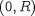

The following are examples of single integrals:
Note that an integration variable (e.g. z in the above examples) is introduced to define the range of
integration. The integrand is generally an expression that may involve the Model Variables and/or the integration variable. The numerical method
used to evaluate the integral depends on whether or not a distributed Model Variable appears in the integrand and the numerical methods
specified (see Specifying Discretisation Methods).
Also note that, in the first example above, the result of the Integral is just a scalar quantity. On the other hand, the second example results in an expression that is distributed over the open domain .